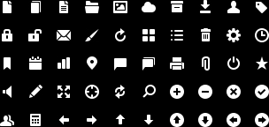

Thank you for purchasing my work. If you have any questions that are beyond the scope of this help file, please feel free to email via my user page contact form here (in the sidebar). Thanks so much!
This menu will automatically expand to take all the available horizontal space. So if you place the menu into a 960px container, it will inherit those 960px. It works in the same way for percentages. In the example pages, you can see that I've put the menu into this container :
<div class="page_wrapper"> </div>
But this is a container that you don't need to use at all, it's not part of the menu and it's just here for showing purposes.
Now let's see a basic menu setup and start with the first wrapper :
<div id="mgmenu1" class="mgmenu_fixed"> </div>
As we have seen earlier, each separate menu (on a same page) should have a unique ID so let's say for example that you want a fixed menu at the top and a fixed footer, it'll look like this :
<div id="mgmenu1" class="mgmenu_fixed"> </div> <div id="mgmenu2" class="mgmenu_footer"> </div>
For your menu you have a choice between 3 options :
And you can easily switch between any of these 3 variants just by modifying a single class.
Now let's get back to our first example, we started the menu with this code :
<div id="mgmenu1" class="mgmenu_fixed"> </div>
From there we'll add the second container :
<div id="mgmenu1" class="mgmenu_fixed">
<ul class="mgmenu">
</ul>
</div>
And that's it, we created the menu bar, now we can simply add menu elements.
<div id="mgmenu1" class="mgmenu_fixed">
<ul class="mgmenu">
<li><span><i class="mini_icon ic_bookmark"></i>Item 1</span></li>
<li><a href="#"><i class="mini_icon ic_tag"></i>Item 2</a></li>
</ul>
</div>
Additionnally, if you use the responsive version of the menu, the whole menu bar is switched to a button on mobile devices. This functionnality requires this element :
<li class="mgmenu_button">Mega Menu</li>
And it should should be placed like this (from the previous example) :
<div id="mgmenu1" class="mgmenu_fixed">
<ul class="mgmenu">
<li class="mgmenu_button">Mega Menu</li>
<li><span><i class="mini_icon ic_bookmark"></i>Item 1</span></li>
<li><a href="#"><i class="mini_icon ic_tag"></i>Item 2</a></li>
</ul>
</div>
I've put here 2 different examples to show you that these menu items can be links or span elements. I'd recommend to keep span elements for menu items that will hold a drop down, and links for simple links. But it'snot something necessary, it's just my personal recommendation. The <i> element is also optionnal, just use it if you want an icon to appear on the left of the menu element (see the next section for more explanations).
For more simplicity, we'll work with a simplified markup so let's take back our example to add a drop down :
<div id="mgmenu1" class="mgmenu_fixed">
<ul class="mgmenu">
<li><span><i class="mini_icon ic_bookmark"></i>Item 1</span></li>
</ul>
</div>
The drop down will be placed within the LI element as following :
<div id="mgmenu1" class="mgmenu_fixed">
<ul class="mgmenu">
<li><span><i class="mini_icon ic_bookmark"></i>Item 1</span>
<div class="dropdown_fullwidth">
</div>
</li>
</ul>
</div>
Here we've added a DIV element that has one class : dropdown_fullwidth. It means that this drop down will have a width equal to the width of the menu bar.
As alternatives, you have 11 other sizes for the drop downs, and all of them are coded in this way :
<div id="mgmenu1" class="mgmenu_fixed">
<ul class="mgmenu">
<li><span><i class="mini_icon ic_bookmark"></i>Item 1</span>
<div class="dropdown_container dropdown_4columns">
</div>
</li>
</ul>
</div>
You first need the dropdown_container class which is used to reference any drop down other than a full width drop down. This class is followed by dropdown_4columns in this example but you have the choice between 11 sizes (ordered from the smallest to the largest) :
If you use dropdown_1column, you'll have the smallest size for a drop down, and on the opposite, dropdown_11columns will be the largest (without considering dropdown_fullwidth).
To sum this up, you either use a full width drop down with dropdown_fullwidth or a sized drop down by using dropdown_container followed by dropdown_Xcolumns where X is a number between 1 and 11.
We have seen earlier how to set up containers for the drop downs. Now within any of these drop downs, you'll need to put your content organized in columns. It means that for any drop down, you can have between 1 and 12 columns of content that will scale automatically to fit. Let's use our previous markup and add a few columns :
<div id="mgmenu1" class="mgmenu_fixed">
<ul class="mgmenu">
<li><span><i class="mini_icon ic_bookmark"></i>Item 1</span>
<div class="dropdown_container dropdown_4columns">
<div class="col_12">
Title
</div>
<div class="col_8">
Left column
</div>
<div class="col_4">
Right column
</div>
</div>
</li>
</ul>
</div>
You have the choice between 12 column sizes, from the largest to the smallest :
col_12 is the largest and col_1 the smallest. Now you have to keep in mind that to create a row of content, you need to reach a value of 12 by adding the numbers used in these class names. For example, col_12 will expand to the whole drop down space available. If you add other columns, they'll fall under this one.
In the sample above, I've used col_12 and the second row of content has col_8 combined with col_4 : 8 + 4 = 12, together they exand to the whole space available. These column containers are using percentages so you can think of it with this system :
Each time you build your columns, you need to reach 100% of the width by combining these columns (and adding the number representing them, like col_6 is half of the width, put it twice and you get 2 equal columns). Here are other examples :
1 row of 3 equal columns
<div class="col_4"> Left column </div> <div class="col_4"> Middle column </div> <div class="col_4"> Right column </div>
1 row of 4 equal columns
<div class="col_3"> First column </div> <div class="col_3"> Second column </div> <div class="col_3"> Third column </div> <div class="col_3"> Fourth column </div>
1 row of 2 equal columns
<div class="col_6"> Left column </div> <div class="col_6"> Right column </div>
2 rows with : 2 columns, 5 columns (various sizes, no equal columns)
<div class="col_8"> Left column (row 1) </div> <div class="col_4"> Right column (row 1) </div> <div class="col_2"> First column (row 2) </div> <div class="col_3"> Second column (row 2) </div> <div class="col_1"> Third column (row 2) </div> <div class="col_1"> Fourth column (row 2) </div> <div class="col_3"> Fifth column (row 2) </div>
This example above is more complex but should show you exactly how it works : we have seen that columns are proportionnal and col_12 represents 100% of the width. Each time you reach a value of 12 by adding the column number values, it makes a row of content. Here's another example :
You'll maybe need to time to understand how this system works, it's a little bit complicated but once you get the logic, things are much easier and incredibly flexible. Now you don't have to think about pixel values, all the elements are resized to fit into any context.
In the HTML pages provided in the package, you'll find that some drop downs use a system of tabs or panels. You can have them on several drop downs and they all follow the same structure : you have first the links (that load the corresponding part once clicked), and the panels.
These tabs can be used in any type of drop down, full width or not. As an example, we'll take back the code used to explain how to set up a basic drop down :
<div id="mgmenu1" class="mgmenu_fixed">
<ul class="mgmenu">
<li><span><i class="mini_icon ic_bookmark"></i>Item 1</span>
<div class="dropdown_fullwidth">
</div>
</li>
</ul>
</div>
For more simplicity, we'll keep only the drop down code :
<div class="dropdown_fullwidth"> </div>
So here we need to add the mgmenu_tabs as following :
<div class="dropdown_fullwidth mgmenu_tabs"> </div>
From there we can add 2 links that will be the navigation system :
<div class="dropdown_fullwidth mgmenu_tabs">
<ul class="mgmenu_tabs_nav">
<li><a href="#section1" class="current">Tab 1</a></li>
<li><a href="#section2">Tab 2</a></li>
</ul>
</div>
Each link must point to a unique anchor, for example if you use several tab systems in different drop downs, you should make sure that each one has its own anchor / ID. Also each section, except the first one, must have the class mgmenu_tabs_hide in order to hide them - so the first one remains visible.
After the links, you can put the containers that will hold the tabs :
<ul class="mgmenu_tabs_nav"> <li><a href="#section1" class="current">Tab 1</a></li> <li><a href="#section2">Tab 2</a></li> <li><a href="#section3">Tab 3</a></li> </ul> <div class="mgmenu_tabs_panels"> <div id="section1"> </div> <div id="section2" class="mgmenu_tabs_hide"> </div> <div id="section3" class="mgmenu_tabs_hide"> </div> </div>
And that's it, you have all the necessary markup to hold a system of 2 tabs. You can use the column system described above within those tabs.
Additionnally, the tabs links can be place on the left side (by default) or on any other side by using the following classes :
If we take our previous example and want to place the link to the top, the code will be :
<div class="dropdown_fullwidth mgmenu_tabs mgmenu_tabs_top"> ... </div>
All graphics have been optimized for retina displays. If you add your own graphics or images, it's totally optionnal for you to prepare them for retina displays, however if you don't know much about this topic, I can recommend you this page where you'll find simple explanations.
The menu includes a set of mini icons that are integrated to be used in the menu bar. When you want to add an icon to a menu element, you have to use the <i> element like this :
<li><a href="#"><i class="mini_icon ic_tag"></i>Element</a></li>
This element adding the icon requires 2 classes : mini_icon and the reference to a precise icon, ic_tag in this case. Here's a screenshot of all available icons :
And here's a quick reference, these are the classes used for each icon, row by row :
Row 1
Row 2
Row 3
Row 4
Row 5
I've included a simple but functionnal contact form with this menu. If you need a more advanced solution, I recommend you to look for a professional product and replace completely this form. This one is good for small sites but you can find much better solutions on Codecanyon for example.
In order to use this contact form, you only need to open the file email.php and put your email address at the line 8. Once uploaded on your server, it should work as expected.
If you want to modify the feedback messages appearing when a field is empty or when the email has been sent, open the file mgmenu_plugins.js and scroll down to the line 13. The contact form script begins here and here are the messages that you can modify (be careful when you manipulate this code, you should just change the words, nothing else if you're not experimented with javascript) :
Line 21 :
<div class="error">Hey, what is you name!?</div>
Line 28 :
<div class="error">Psst. You missed one.</div>
Line 31 :
<div class="error">I think your email is wrong...</div>
Line 37 :
<div class="error">Oops! You forgot to type a message!</div>
Line 50 :
Your email has been sent successfully !
In the css folder, you'll find the only file required : mgmenu.css. It contains all the required (and optional) styling for the mega menu.
If you want to modify some properties in the CSS, make sure that you keep a safe copy of the original file before starting. This CSS is quite complex and requires a good knowledge of CSS markup to be safely modified.
This file is divided into 8 main parts and modifying this file may affect the functionnality so be very careful when you start your customizations :
00 PAGE STYLING (REMOVABLE) 01 MENU BAR 1. Mega Menu Bar 2. Mega Menu Trigger Button 02 DROP DOWNS 1. Common Styling 2. Footer 3. Drop Down Containers 03 COLUMNS GRID 04 MULTILEVEL DROP DOWN 05 CONTENT & TYPOGRAPHY 1. Basic Typography 2. Lists 3. Other Styling 4. Inline Images 5. Icons 6. Form Elements 06 DROP DOWN TABS 07 MOBILE DEVICES 08 RETINA DISPLAYS
Here are additional explanations of the content of each part of the CSS :
I've included all the assets in PSD format when it was possible, you can use them to create your own graphics or to bring modifications. For each of them you have 2 versions, normal and for retina displays (marked with @2x).
Yes ! When you purchase a product on Codecanyon, you can always access it in your downloads page. There you can subscribe to receive an email and get notified if an update is available, only the last version will appear in your downloads page. Those updates are totally free !
If you encounter an issue when using my work or find a problem, you can contact me at any time from my profile page. You'll need to be logged in to be able to access the contact form (in the sidebar). I usually reply within 24-48 hours but during holidays or week-ends, it can take more time.
I try to regularly update my products based on the feedback I receive, so if you find any kind of bug, I'll do my best to update the menu as soon as possible. If you have an idea that could improve it, feel free to ask me, some customization questions happened to be the starting point of an update.
I don't have much time for customization works, you can contact me with your request if you need something but I can't promise if I'll be available or not.
No, this is not a Wordpress plugin or a Joomla module. This menu is made of static HTML/CSS files, it means that all the integration must be done manually, in the source code. In other words, it can work under Wordpress or Joomla only if you add all the assets and the necessary markup manually but it can't be "installed" like a plugin or a module.
This is typically the question I can't answer for you. The difficulty totally depends on you, on your knowledge of coding, on your experience, etc. And I'm not the one who can tell if it's difficult or not.
Yes ! The whole menu bar can be used fixed at the bottom of your site, you can switch to the footer version just by changing a single class. And you'll have the exact same functionnalities : drop downs (or we could say "drop ups" in this case), fly-outs, tabs, etc. At this time, the menu used as a footer will appear at the top on mobile devices for the simple reason that when you have "drop-ups" a bit too long, you can't scroll up to view the content. If you have any suggestion to improve it, feel free to contact me !
Here are 2 alternatives if you're looking for a footer :
Yes for sure ! You're not required to use mega drop downs or fly-out submenus at all. You can use this product as a simple menu bar aswell, with or without drop downs.
It's because the menu is responsive. The markup resizes all the elements so they can fit into any screen size including mobile phones. If your site is not responsive itself or if you don't want this functionnality at all, you'll find 2 versions of the menu in the package : responsive and non-responsive. The second one is probably what you're looking for and nothing will happen if you resize the browser.
If by mistake you started working with the responsive version and want to switch to the non-responsive version, you'll need to replace all javascript and CSS files by the ones situated in the "Non-Responsive" folder. Only your HTML will remain the same. If you've already modified the CSS and don't want to lose your changes, just delete the entire section labelled "07 MOBILE DEVICES".
Quite easy, there's almost nothing in particular to do because the whole menu system is coded to fit where you put it. If you include the menu into a 960px container, the whole menu will inherit this same width. And all drop downs will scale proportionnally to this initial width so you don't have to worry about calculating pixel values. And the same applies if you add the menu into a container that has a width in percentages. The menu will always take all the horizontal space to fill it. As simple as that !
This menu is styled via CSS and you can there change all the colors, fonts, sizes, etc. There are several ways for that : you can directly modify the CSS or add your styling at the end of the file so you can keep all default values and just overwrite them.
The whole CSS file is organized into labelled sections so it's easier to find the elements you want to modify.
There's a documentation included in the package but this is not some kind of HTML/CSS course so you won't learn there how to add gradients or shadows for example.
No, I don't offer this option. If you need a vertical menu, here are a few recommendations :
Yes for sure ! There's a contact form on my profile page (you must be logged in to view it) and you can send me your request from there. The best is to provide an URL if you can so it's easier for me if I can view the code.
Before contacting me, please make sure that the page is accessible and take some time to check if there are not critical markup errors.
I mostly use CSS3 to style my web elements and add shadows, gradients, sometimes animations, etc. Old browsers, especially Internet Explorer 7-8 and in the compatible list. However these old guys don't support modern CSS3 effects (rounded corners, shadows, etc.). If you really need to enable these CSS3 effects under IE7 or IE8, you can use filters or scripts like CSS3 PIE.
There can be many reasons why a script wouldn't work. Here are a few tips :
Quite often, if you integrate the menu into an existing site, there are chances that jQuery is already there (it's often used for sliders, lightboxes, etc.). This menu also needs jQuery but you shouldn't add it a second time. Make sure that you have a single instance of jQuery, not one for each element even if it's a different version.
If you need to keep an older version of jQuery than the one provided with the menu, you can ask me to test it for you so you can be sure that it'll work in your site.
You can also check if you don't have script errors. For that, open your page and hit F12 in Chrome and you'll see a panel at the bottom. You have several tabs and the last one is labelled "Console". Click on it and you should see if there are errors or not.
Most of the time it's a simple z-index issue which you can think of the way to stack element on top of each other. By default, the menu has a z-index of 12 so if you have a slider with a z-index of 13 (or any value more than that), the menu will fall behind this slider.
And the opposite is true, for example if you have a lightbox with a z-index of 10, it'll appear behind the menu. Here's an illustrative case : on your page, you have this menu, a slider and a lightbox. The lightbox should always be on top of everything else so it should have the highest z-index. The menu should be above the slider but under the lightbox and finally the slider should appear behind both the menu drop downs and the lightbox. The 3 z-index values should follow this order : lightbox > menu > slider
That's it, so if you have this kind of issue, there are chances that your other elements have a z-index aswell and you should check the existing values.
Lastly, if you manually add z-index values, keep in mind that they are applied to an element only if it's a positionned element. It can be relative, absolute or fixed, the z-index works along with a defined position.
I've used the following assets as listed.
Once again, thank you so much for purchasing this theme. As I said at the beginning, I'd be glad to help you if you have any questions relating to this theme. No guarantees, but I'll do my best to assist. If you have a more general question relating to the items on Codecanyon, you might consider visiting the forums and asking your question in the "Item Discussion" section.
Pixelworkshop